A Context-Specific Nature-Based Framework for Heat Mitigation
Supporting the Everyday Mobility of Older Adults in Kadıköy, Istanbul
Download Thesis Booklet (PDF, 60 MB)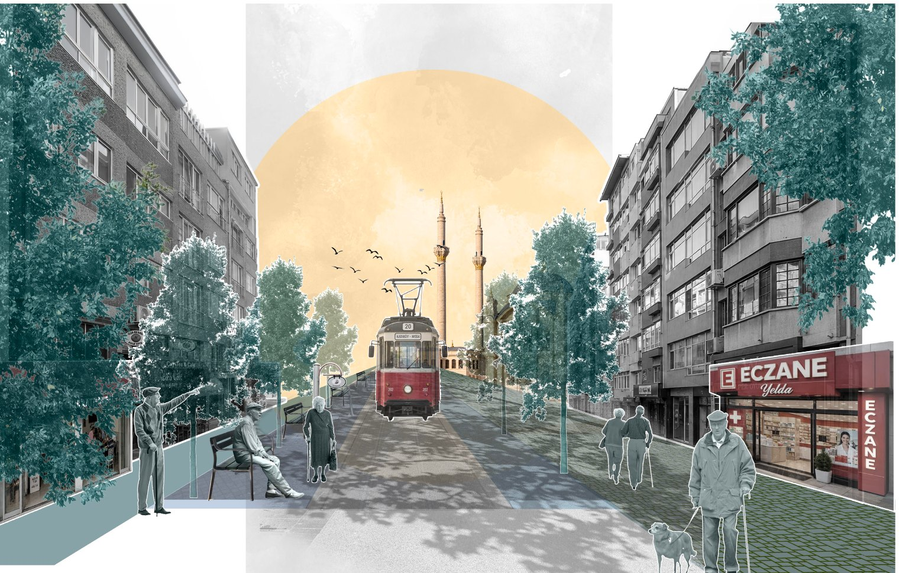
Nature-Based Solutions (NBS) are widely promoted to mitigate urban heat, but in practice they are often reduced to generic tree planting, with little attention to whether dense streets can hold trees or whom the cooling should serve. This thesis asks how NBS can be contextualised to mitigate urban heat while supporting the everyday mobility of an ageing population, using Kadıköy, the Istanbul district with the largest older population, as a case study.
Ten summers of Landsat land surface temperature, demographic data and urban morphology were used to locate priority areas. The everyday destinations of older adults were then mapped and connected into a priority walking network, the Green Loop. Ten street sections along it were surveyed and simulated for direct sun, and grouped into four typologies. A five-step filter of the World Bank's NBS catalogue produced a toolbox of seven street-scale tools, which was applied to four design sites.
The thesis contributes a transferable framework in which the social context decides where to intervene and the physical context decides how. It shifts the unit of prioritisation from the neighbourhood where vulnerable people live to the network of streets where they walk, wait and rest.
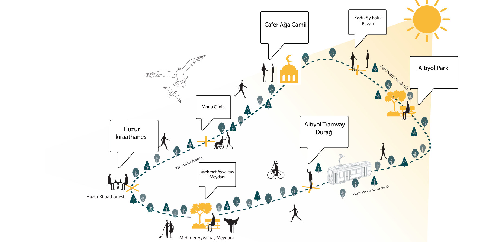
The Mediterranean is warming about 20% faster than the global average (MedECC, 2020), and urban heat islands intensify during heatwaves (Li & Bou-Zeid, 2013). Older adults are among the most heat-vulnerable groups, and because many depend on walking to reach nearby destinations (Rosso et al., 2011), their exposure happens largely in the street: while walking, waiting and resting.
The cooling effect of NBS depends on mechanism, quantity and setting (Bowler et al., 2010; Coutts et al., 2016), yet “few frameworks for NBS address implementation”, and NBS need to be “adapted to site-specific societal challenges” (Wickenberg et al., 2021). Prioritisation frameworks combine heat with vulnerability, but define vulnerability by where people live (Norton et al., 2015). Istanbul's Climate Change Action Plan frames heat mitigation largely as tree planting (İBB, 2021).
A review of policy and research in Türkiye shows two gaps. A gap of scale: policy works at the scale of the city, district or large park, and research either models the whole city or tests single elements, leaving the street unaddressed as a unit of intervention. A gap of focus: existing work rarely asks whose exposure is being reduced, or in which spaces of everyday life it occurs. The thesis addresses both by taking the street as the unit of intervention and the everyday routes of older adults as the basis for prioritisation.
How can Nature-Based Solutions be contextualised to mitigate urban heat while supporting the everyday mobility of an ageing population?
- RQ1. Where should urban cooling be prioritised when patterns of urban heat are considered alongside the everyday destinations and walking routes of older adults?
- RQ2. How do local spatial and environmental conditions influence the selection and adaptation of NBS?
- RQ3. How can context-specific NBS be integrated into a connected cooling network that supports everyday mobility?
Case. Kadıköy, on the Anatolian side of Istanbul, combines the city's largest older population, a diverse urban fabric and a dense historic centre where everyday destinations concentrate and walking is the main way to get around. The aim is not a universal catalogue of interventions, but a process that can be transferred to other districts, cities and heat-vulnerable groups.
A multi-scalar, research-by-design methodology that combines spatial and environmental analysis, demographic data, field observation, an exploratory interview and design exploration, and moves across five scales, from district to site. The first three stages use the social context to decide where; the last two use the physical context to decide how.
1. Locate priority areas (district). Landsat 8/9 surface temperature for June–August 2016–2025 was processed in Google Earth Engine into a ten-year median and classified by percentile. Hotspots were read against land use, urban form and the share of residents aged 65+, and thirteen urban morphologies were identified. Output: selection of Caferağa and Osmanağa.
2. Map everyday destinations (neighbourhood). An exploratory interview with Medipol University students who had studied older adults' use of public space defined the destination types; 124 destinations were then mapped from OpenStreetMap in QGIS.
3. Identify the priority network. Destination clusters became anchors and the streets linking them priority routes; distance to the network was measured in QGIS. Output: the Green Loop.
4. Contextualise NBS (street). Ten sections along the loop were surveyed for building height, street width, enclosure (H/W), orientation, street function, planting capacity and existing vegetation, and direct sun on pedestrian space was simulated in Ladybug for 23 July 2025, a representative extreme-heat day. The World Bank catalogue was filtered in five steps. Output: four typologies and seven tools.
5. Integrate into design (site). The tools were applied to the most sun-exposed section of each typology, and before-and-after sections compared the allocation of street width.
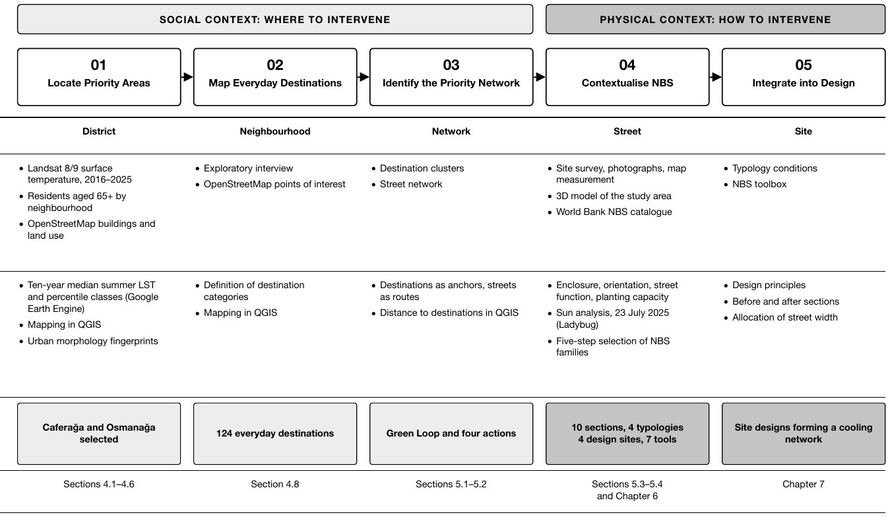
Heat follows urban form, not land use. The ten-year median LST map (Fig. 03) shows that surface heat in Kadıköy is associated less with particular land uses than with recurring urban morphologies. Thirteen morphologies were identified through visual interpretation of the LST maps overlaid with satellite imagery and OpenStreetMap building footprints, and a sample of each was drawn as a figure-ground fingerprint at the same scale (Fig. 04), each combining heat drivers in a different way.
The hottest places are not where older adults walk. The most intense heat sits on large single-use sites (transport corridors, the port, brownfield land, sports and commercial complexes, campuses), which rarely form part of older adults' everyday walking. Informal dense and high-rise residential fabric is hot but houses comparatively few older adults. The planned medium-rise south-east houses the largest older population but is cooler, with private gardens and more continuous canopy. These morphologies were excluded.
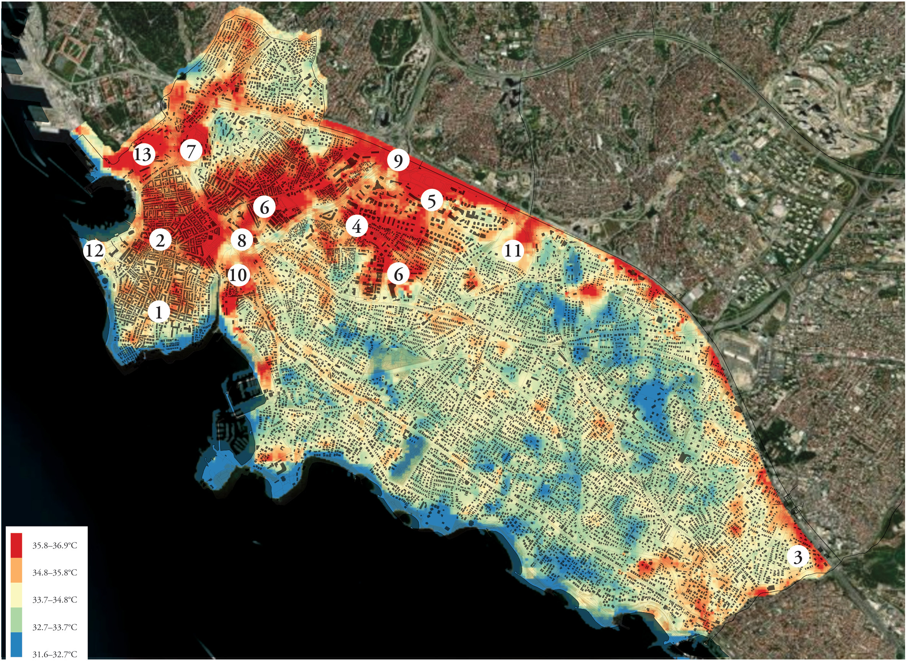
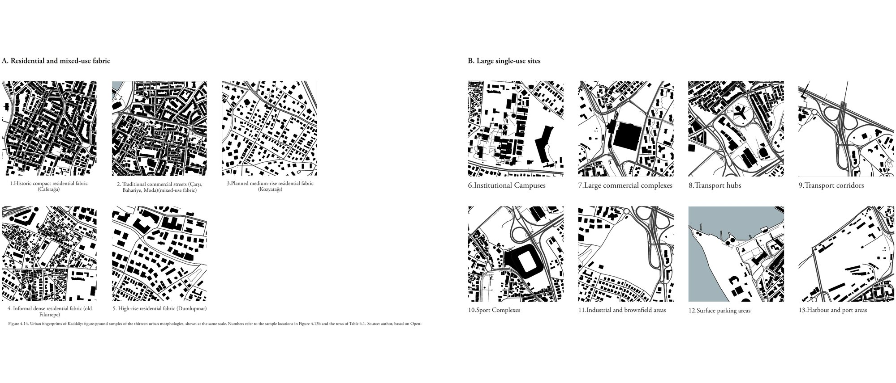
The site was chosen from the morphology analysis. What remained after the exclusions was the historic compact fabric and traditional commercial streets of Caferağa and Osmanağa. They combine three conditions:
- Destinations. As Kadıköy's commercial and transport centre, they concentrate markets, shops, services, cafés and places of worship, with the main ferry, tram, metro and bus connections. They were selected for the destinations they contain, which serve older adults from the surrounding neighbourhoods as well, not for their resident population.
- Walking. Their organically grown, pedestrian-scaled street network keeps walking central to everyday movement, although most streets are now shared with vehicles.
- Heat and constraint. They show elevated surface heat with extensive sealed surfaces and little vegetation, while narrow streets, heritage and underground utilities limit generic tree planting. This makes them both a priority for cooling and a demanding test case.
The photographs below show the frequently walked streets of the site, surveyed in February 2026 (deciduous trees without leaves).
From where older adults live to where they go. Within the site, 124 everyday destinations were mapped (Fig. 05): pharmacies, markets, bakeries, healthcare facilities, traditional teahouses, mosques and parks. They are not evenly spread: they cluster around the commercial core and along a few main streets leading south towards Moda.
A small network serves most trips. These clusters became anchors, and the streets linking them, Bahariye, Moda and Söğütlüçeşme Caddesi, became the Green Loop (Fig. 06). It passes within 100 m of two-thirds of the 122 non-park destinations, a walk of about two minutes at an older adult's pace (Table 1). Cooling should therefore be prioritised where elevated heat coincides with these destinations and routes, not where surface heat peaks.
Table 1. Everyday destinations by distance to the Green Loop.
| Destination type | Total | Within 100 m | Within 200 m |
|---|---|---|---|
| Pharmacies | 39 | 24 (62%) | 36 (92%) |
| Markets | 35 | 25 (71%) | 32 (91%) |
| Bakeries | 19 | 14 (74%) | 18 (95%) |
| Healthcare facilities | 15 | 13 (87%) | 14 (93%) |
| Traditional teahouses | 8 | 4 (50%) | 7 (88%) |
| Mosques | 6 | 2 (33%) | 2 (33%) |
| All destinations | 122 | 82 (67%) | 109 (89%) |
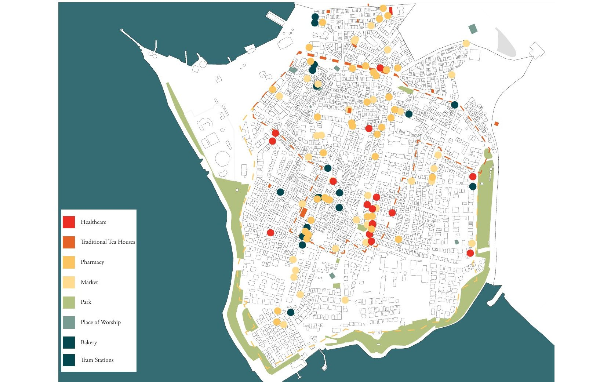
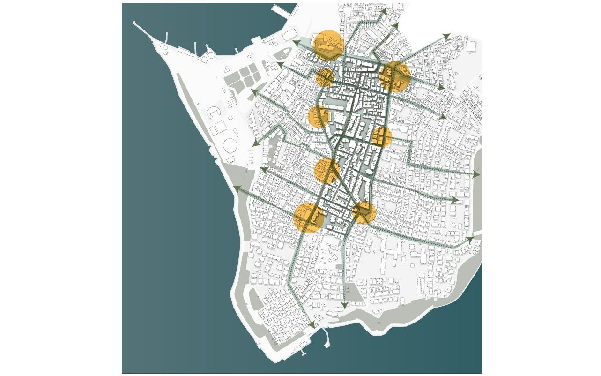
Enclosure alone does not predict exposure. Section A-A is enclosed (H/W 1.7), yet it was among the most sun-exposed because its north–south orientation admits the midday sun. The very narrow east–west D-D (H/W 2.3) stayed largely shaded. Orientation and enclosure have to be read together, and the self-shaded sections D-D and J-J were not prioritised for intervention.
Four typologies make the differences operational (Table 2). In enclosed tram streets, tram infrastructure rules out most in-ground planting; in wide open streets, comfort depends on completing the canopy; in car-shared streets, parking is the main reserve for planting; in pedestrian streets, narrow widths and market activity call for overhead and vertical greening.
Table 2. The four street typologies along the Green Loop and their design response. Sun exposure of pedestrian space on 23 July 2025.
| Typology | Sections · sun exposure | H/W | Main condition | Design response | Design site |
|---|---|---|---|---|---|
| 1 Enclosed tram streets | A-A high · C-C medium–high · D-D low | 1.5–2.3 | Tram tracks, overhead lines and narrow pavements limit in-ground planting | Trees in planter boxes; tree with bench where the ground allows; vegetated pergolas at tram stops; climbing plants | A-A, C-C |
| 2 Wide open streets | F-F high · B-B medium | 0.45–0.94 | Little building shade; comfort depends on canopy continuity | Trees and rain gardens in former parking lanes; benches under trees; climbing plants | F-F |
| 3 Enclosed car-shared streets | E-E high · G-G high | 1.3–1.8 | Edges occupied by parking; no vegetation; extensive asphalt | Parking reallocated to planted strips with trees and benches; climbing plants; permeable surfaces | E-E |
| 4 Pedestrian streets and squares | H-H high · I-I high · J-J low | 0.3–1.5 | Intensive pedestrian use; little room for trees; squares open to the sun | Pergolas along frontages; trees in planter boxes or in the ground in squares; climbing plants; permeable surfaces | Guidance only |
General catalogues need filtering. Only four of the World Bank's fourteen NBS families cool through processes that act at pedestrian level and fit dense urban fabric (Table 3). From them, seven street-scale tools were derived: four directly from the catalogue, and three (tree in planter box, tree with bench, vegetated pergola) adapted to the constraints of the study area. Shade is the primary goal, because mean radiant temperature dominates daytime heat stress for pedestrians.
Table 3. Five-step selection of NBS families from the World Bank (2021) catalogue.
| Step | Criterion | Families retained |
|---|---|---|
| 1 · Function | Regulates heat | 10 of 14 |
| 2 · Process | Cools through shade and/or evapotranspiration | 8 of 10 |
| 3 · Scale and area | Neighbourhood scale, small area | 7 of 8 |
| 4 · Urban density | Suitable for high density | 3 of 7 |
| 5 · Benefit | Building Solutions, Open Green Spaces, Green Corridors (primary) + Bioretention Areas (supporting) | 4 families → 7 tools |
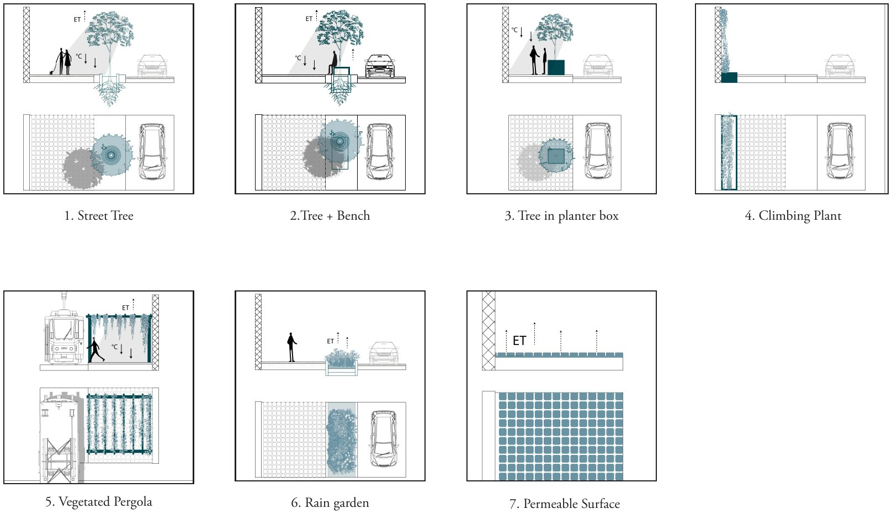
Four actions set an order of priority. Anchor provides shade first where older adults wait and rest at key destinations. Cool improves the immediate surroundings of each anchor. Connect links the anchors with continuous shaded routes. Expand extends the network into residential side streets over time.
The network is built from repeated, condition-specific responses rather than a single uniform intervention. Each design site tests one typology, and its response transfers to the other sections of the same typology and, later, to the side streets. Where trees cannot be planted, climbing plants, pergolas and planter boxes take their place, so cooling is not abandoned in the narrow streets where older adults often walk. Across the four sections, the share of street width given to planting and permeable surfaces rises from 2% to 35%.
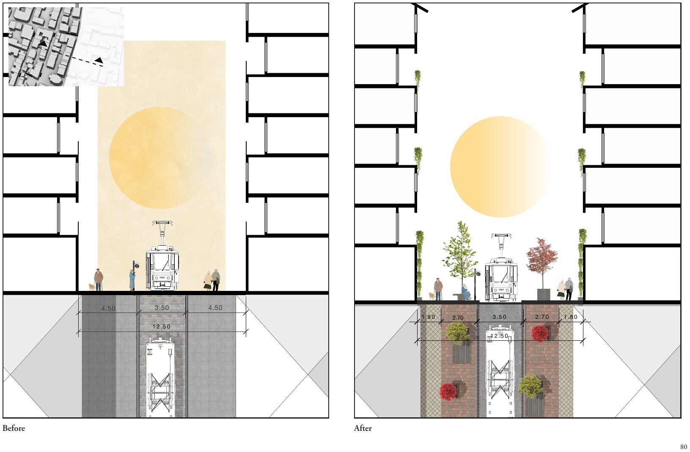
12.5 m wide, H/W 1.7. Pavements split into 1.8 m walking zones and 2.7 m planted zones. Trees in planter boxes sit over the tram infrastructure, with one in-ground tree and bench and climbing plants on both façades.
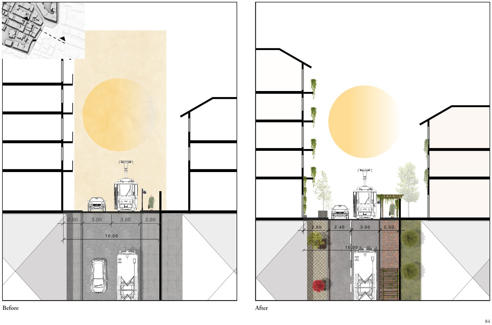
10 m wide, H/W 1.5. The traffic lane is narrowed to 2.4 m so that one pavement widens to 2.6 m for planter-box trees. A vegetated pergola shades the tram stop where older adults wait.
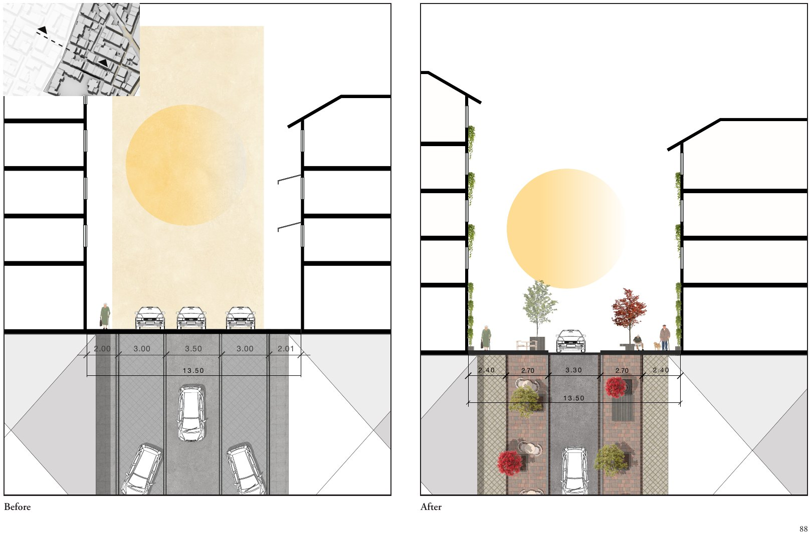
13.5 m wide, H/W 1.3. On-street parking becomes two 2.7 m planted strips with trees, benches and permeable surfaces, and a 3.3 m carriageway is kept for access.
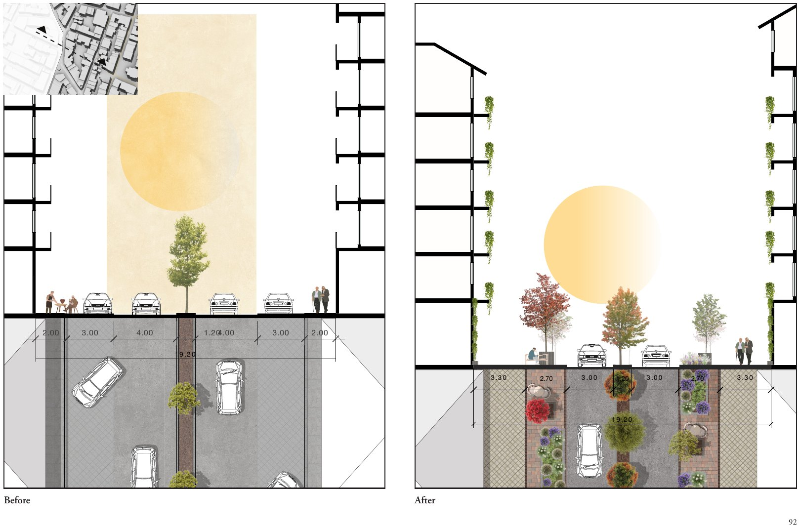
19.2 m wide, H/W 0.9. Parking is removed and the road narrowed to one lane each way. Planted strips with rain gardens and trees join the existing median trees, giving three lines of canopy.
Relation to the literature. The solar analysis confirms that deep, narrow streets self-shade (Ali-Toudert & Mayer, 2006; Johansson, 2006) and that added tree shade matters most where streets are open and exposed (Coutts et al., 2016). It qualifies the finding that east–west streets in Istanbul are the most heat-stressed (Sarı et al., 2025): orientation predicts exposure only together with enclosure. The design process also showed that existing assets count: the already shaded surroundings of the Caferağa Mosque were given lower priority, so the loop does not need continuous new intervention.
Contribution. First, the framework extends heat-vulnerability prioritisation (Norton et al., 2015) from where vulnerable people live to where they walk, wait and rest. This shift is supported by evidence from Barcelona that proximity to cool places does not guarantee older adults can reach them (Meza et al., 2026). Second, it links the selection of NBS to the measurable conditions of each street, offering an alternative to the generic tree planting that dominates current policy in Istanbul. The catalogue analysis shows why a context-specific toolbox, rather than a general catalogue, is needed.
Transferability. The framework transfers as a process, not as a set of designs: screen surface heat with free satellite data, separate hotspots in lived-in fabric from those on single-use sites, map the destinations of the group in question, connect them into a network, classify its streets and select NBS by cooling process and fit. The social lens can change: schools and playgrounds for children, transport stops and workplaces for outdoor workers, accessible routes and resting points for people with disabilities.
Limitations. The cooling performance of the designs was not simulated; expected effects rest on mechanisms and evidence from the literature. Land surface temperature describes surfaces rather than what pedestrians feel, and the sun analysis covers one representative day rather than the whole summer. Destination types came from an exploratory interview rather than from older residents themselves. Anthropogenic heat from traffic, and the maintenance and irrigation demand of the planting, were outside the scope.
Future research.
- Performance. The cooling performance of the designs should be tested through microclimate simulation or field measurement, using indices such as PET or UTCI.
- Lived experience. Older adults themselves should be involved in identifying their routes, resting places and experiences of heat, and the mapped destinations verified through participatory mapping and accompanied walks.
- Transfer. Other districts of Istanbul, and other dense Mediterranean cities with ageing populations and historic street networks, could follow the same sequence, with the social lens changed to other heat-vulnerable groups.
- Viability. The maintenance and irrigation demand of the proposed planting, on which the long-term viability of the toolbox depends during increasingly dry summers, remains to be assessed.
I am currently developing the screening stages of this framework into UrbanSim, a heat-screening tool for planners.
- Ali-Toudert, F., & Mayer, H. (2006). Numerical study on the effects of aspect ratio and orientation of an urban street canyon on outdoor thermal comfort in hot and dry climate. Building and Environment, 41(2), 94–108. doi:10.1016/j.buildenv.2005.01.013
- Bowler, D. E., Buyung-Ali, L., Knight, T. M., & Pullin, A. S. (2010). Urban greening to cool towns and cities: A systematic review of the empirical evidence. Landscape and Urban Planning, 97(3), 147–155. doi:10.1016/j.landurbplan.2010.05.006
- Coutts, A. M., White, E. C., Tapper, N. J., Beringer, J., & Livesley, S. J. (2016). Temperature and human thermal comfort effects of street trees across three contrasting street canyon environments. Theoretical and Applied Climatology, 124(1–2), 55–68. doi:10.1007/s00704-015-1409-y
- İstanbul Büyükşehir Belediyesi [İBB]. (2021). İstanbul iklim değişikliği eylem planı [Istanbul climate change action plan]. İstanbul Büyükşehir Belediyesi.
- Johansson, E. (2006). Influence of urban geometry on outdoor thermal comfort in a hot dry climate: A study in Fez, Morocco. Building and Environment, 41(10), 1326–1338. doi:10.1016/j.buildenv.2005.05.022
- Li, D., & Bou-Zeid, E. (2013). Synergistic interactions between urban heat islands and heat waves: The impact in cities is larger than the sum of its parts. Journal of Applied Meteorology and Climatology, 52(9), 2051–2064. doi:10.1175/JAMC-D-13-02.1
- MedECC. (2020). Climate and environmental change in the Mediterranean Basin – Current situation and risks for the future. First Mediterranean Assessment Report (W. Cramer, J. Guiot, & K. Marini, Eds.). Union for the Mediterranean, Plan Bleu, UNEP/MAP.
- Meza, S., Arellano, B., & Roca, J. (2026). Beyond proximity: Uncovering accessibility inequities in Barcelona's climate shelters network for the summer of 2023. Journal of Urban Mobility, 9, 100175. doi:10.1016/j.urbmob.2025.100175
- Norton, B. A., Coutts, A. M., Livesley, S. J., Harris, R. J., Hunter, A. M., & Williams, N. S. G. (2015). Planning for cooler cities: A framework to prioritise green infrastructure to mitigate high temperatures in urban landscapes. Landscape and Urban Planning, 134, 127–138. doi:10.1016/j.landurbplan.2014.10.018
- Rosso, A. L., Auchincloss, A. H., & Michael, Y. L. (2011). The urban built environment and mobility in older adults: A comprehensive review. Journal of Aging Research, 2011, 816106. doi:10.4061/2011/816106
- Sarı, E. N., Nouri, A. S., Ekşi, M., & Matzarakis, A. (2025). Assessing thermo-physiological effects of different tree species within the inner regions of the urban canyon; confronting in-situ extreme heat stress in Istanbul during the El-Niño summer of 2023. International Journal of Biometeorology, 69(7), 1663–1686. doi:10.1007/s00484-025-02922-7
- Wickenberg, B., McCormick, K., & Alkan Olsson, J. (2021). Advancing the implementation of nature-based solutions in cities: A review of frameworks. Environmental Science & Policy, 125, 44–53. doi:10.1016/j.envsci.2021.08.016
- World Bank. (2021). A catalogue of nature-based solutions for urban resilience. World Bank Group.
Cite this thesis
Lahooti, G. (2026). A Context-Specific Nature-Based Framework for Heat Mitigation: Supporting the Everyday Mobility of Older Adults in Kadıköy, Istanbul [Master's thesis, Lund University].